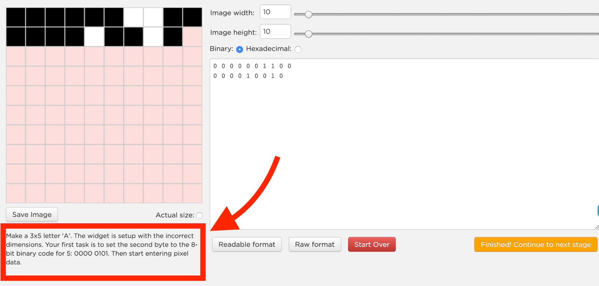
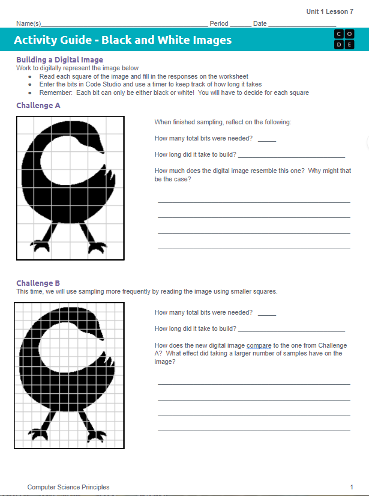
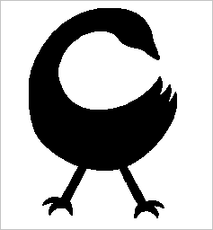
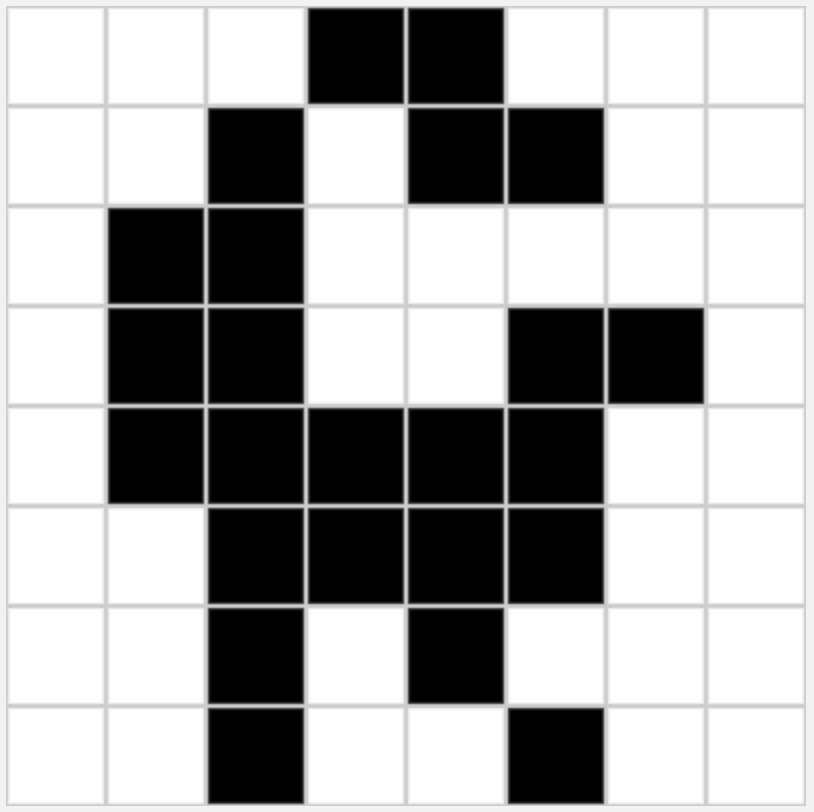
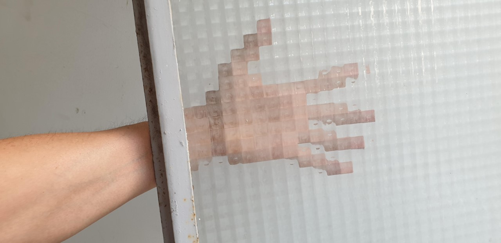
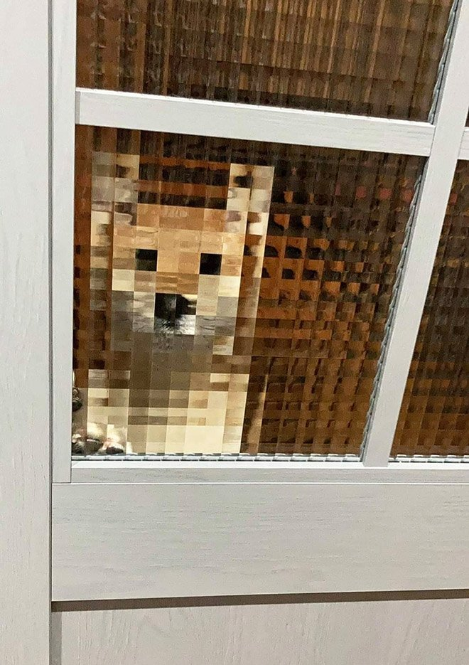

You recently did some online shopping and are expecting a package to arrive in about a month. The delivery service has a tracking system which reads the location of the package.
How often would you want the location read? Every week? Every day? Every hour? Every minute? Explain why.
We're going to jump right into using a new tool. The next slide contains a video which explains this tool.
The video is a little outdated. You no longer set the width and height of the image by adding two bytes of data at the beginning. You just need to set the size of the image using the sliders.
The only data you need to type are the 0s and 1s for the pixels.
Follow this link to code.org. Practice with the pixelation widget on dots 1 & 2.
Check the pop-up: it describes the exact image you need to build. Closed it by accident? Click the paragraph under the image preview to bring it back.


Analog data has values that change continuously, or smoothly, over time. Music, the colors of a painting, and the position of a sprinter during a race are all analog. Digital data changes discretely, through a finite set of possible values.

A smooth outline with no fixed grid.

The same bird, built from a finite grid of black and white squares.
Sampling is a process for creating a digital representation of analog data by measuring the analog data at regular intervals called samples.

Privacy glass samples a real arm.

The same idea, a dog gets itself sampled.
↑ each square is one sample
What are the pros and cons of sampling an image more frequently?